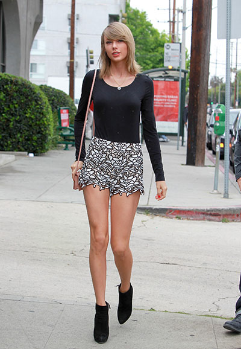

泰勒絲Taylor Alison Swift介紹 |
||
| 簡介 | 音樂欣賞 | 音樂和演唱風格 |
| 簡介 | ||
泰勒·艾莉森·絲威夫特 （英語：Taylor Alison Swift，1989年12月13日－）為美國唱作歌手及演員，生於賓夕法尼亞州雷丁，成長於賓夕法尼亞州懷奧米辛。14歲搬到鄉村音樂重地田納西州納什維爾，投身於鄉村音樂事業。泰勒簽約獨立唱片公司大機器唱片，成為曾受僱於索尼/聯合電視音樂出版最年輕唱作歌手。2006年，泰勒發行個人同名首張專輯，確立了她的鄉村音樂明星之路。她的第三首單曲《我們的歌》，使她成為以一己之力創作並表演熱門鄉村單曲榜首歌曲的最年輕個人，這也讓她在2008年葛萊美獎上贏得最佳新人的提名。 泰勒的第二張專輯《無懼的愛》於2008年發行。受單曲《愛的故事》和《天生一對》在流行樂壇上取得的跨界成功的支持，《無懼的愛》成為2009年美國最暢銷專輯。專輯贏得四項葛萊美大獎，使得泰勒成為該獎最年輕的年度專輯大獎得主。2010年和2012年，泰勒分別發行第三張專輯《愛的告白》和第四張專輯《紅色》，均在美國發行首周賣出超過100百萬張。《愛的告白》單曲《太刻薄》贏得兩項葛萊美大獎，而《紅色》的單曲《絕對絕對分定了》和《我知道你是大麻煩》成為全球熱門單曲。2014年，泰勒發行第五張專輯《1989》，主打流行樂。專輯首周銷量超越12年來的所有專輯，使得泰勒成為首位也是唯一一位有三張專輯在發行首周賣出超過100百萬張的藝人。單曲《通通甩掉》、《空白》和《壞到底》均在告示牌百強單曲榜位列榜首。專輯贏得三項葛萊美獎，絲威夫特因此成為第五位兩度獲得葛萊美年度專輯獎的藝人，也是第一位女藝人[1]。 泰勒亦以自傳體歌曲著稱。身為作曲家的她先後獲得納什維爾詞曲作者協會和詞曲作者名人堂的嘉獎。絲威夫特的其他成就包括10項葛萊美獎、19項全美音樂獎、23項告示牌音樂獎、11項鄉村音樂協會獎、8項鄉村音樂學院獎、1項全英音樂獎和1項艾美獎。她是有史以來銷量最好的藝術家之一，目前已售出超過4000萬張專輯——包括在美售出的2710萬張以及1億歌曲下載量。泰勒還客串了劇情片《情人節快樂》（2010）和《記憶傳授人》（2014）。 |
||